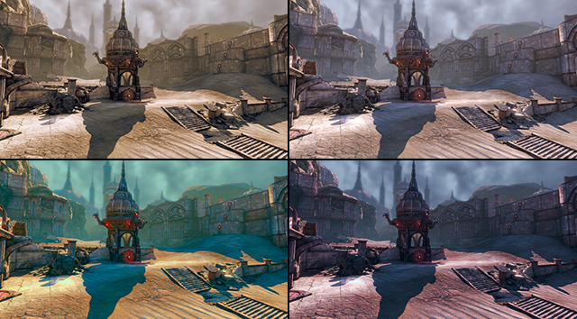
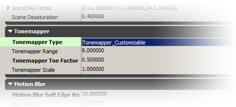
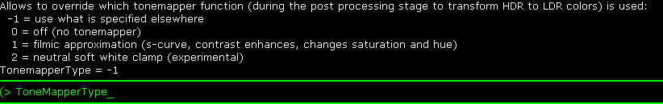
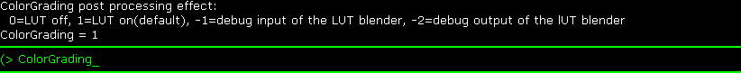
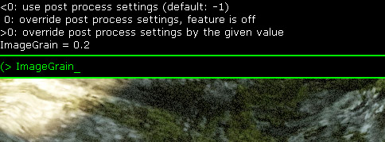
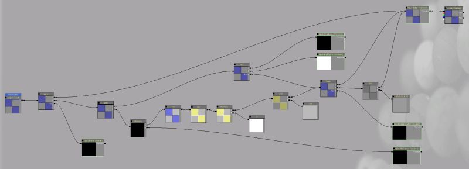

UDN
Search public documentation:
ColorGrading
日本語訳
中国翻译
한국어
Interested in the Unreal Engine?
Visit the Unreal Technology site.
Looking for jobs and company info?
Check out the Epic games site.
Questions about support via UDN?
Contact the UDN Staff
中国翻译
한국어
Interested in the Unreal Engine?
Visit the Unreal Technology site.
Looking for jobs and company info?
Check out the Epic games site.
Questions about support via UDN?
Contact the UDN Staff
UE3 Home > Post Process Effects > Color Grading Post Process Feature
UE3 Home > Cinematic Artist > Color Grading Post Process Feature
UE3 Home > Cinematic Artist > Color Grading Post Process Feature
Color Grading Post Process Feature
|  |
| The images show the same scene with different color grading. |
Overview
The Tone mapper
Note that bright colors become gradually brighter but much less than dark ones. Black remains black and there is a mostly linear part of the curve that is a bit steeper than the non tone-mapped curve would be. That results in some contrast enhancing. It's normal and expected to get a different look when using a tone mapper and in order to get a good result the source image needs to have more dynamic in the brightness (more HDR). This can pay off in a more realistic film like look. The presented tone mapper formula already has two tweakable constants and more math would allow further tweaking but finding a good function is not easy as quality/flexibility/performance needs to be considered. We decided to stick to a simple formula and modify the resulting LDR color with a simple color lookup. As we already mapped the HDR color into a limited range we get a lot of expressibility for the dark colors and still can modify the bright colors. This method is simple to understand, offers a lot of flexibility with local control and almost constant performance. You can enable the tone mapper by choosing the Filmic type in the editor (PostProcessChain / UberPostProcess).  You also can choose the tonemapper type. There is another Customizable tone mapper that works like the Filmic one. That one allows you to blend the bottom part of the tonemapper curve with a linear one (like if there was no tonemapper / linear mapping). This way you can control how much the darks are affected by the tonemapper. Be aware that this one is a slightly slower in render performance.GammaColor = LinearColor / (LinearColor + 0.187) * 1.035;
Color correction
Work flow to create a LUT texture
The procedure:- Make representative screen shots of the scenes you want to adjust and put them in one Photoshop document
- Load a neutral 256x16 LUT into Photoshop (you can take the RGBTable16x1.png image from this page. Do not copy and paste, right-click here and Save link as...: RGBTable16x1.png)
- Insert the LUT into the Photoshop document with the screenshots (Select All in the LUT docuement, copy, switch to screenshot document, paste)
- Apply color manipulations (best by adding adjustment layers, otherwise you need to flatten everything before and cutting out the 256x16 later gets more tricky)
- Select the 256x16 LUT (Select the LUT layer in the layer panel, Menu: Select/Load Selection, Ok)
- Copy merged the content of the LUT (Menu: Edit/Copy Merged)
- Paste and save the 256x16 texture in some uncompressed format that the engine can read (Menu: File/New, Menu: Edit/Paste, Menu: File/Save As)
- Import the texture in the editor and specify the ColorLookupTable Texture Group
- Brightness
- Saturation
- Simple contrast (linear with clamping)
- Higher quality contrast (e.g. curves with a steeper linear part in the middle)
- Selective changes to the darks, midtones and bright areas of an image (e.g. curves)
- Selective changes to specific colors (best expressed in some color space where the brightness is in a separate channel e.g. LAB)
- Adjustements can be even done in a different color space (e.g. LAB keeps brightness and color independent which can be very useful)
Blending between LUT textures
In the game the textures are automatically blended over time (the same time value that was used for the former color correction). The performance impact of blending between multiple LUT is small.Combine math color adjustments with LUT textures
Since long time the post processing allows color correction through a fixed formula (shadows, mid tones, highlights, saturation) but the math was done for each pixel on the screen. With a 3D lookup table we were now able to integrate the color transformation into the table after blending. The amount of math operations per frame is much less and as the postprocessing was a math (ALU) heavy shader we get a nice speedup.Further improvements
Image Grain
Console variables
The console variable TonemapperType can be used to switch between different tonemapper types.  The console variable ColorGrading can be used to debug the blending or to see which LUT texture is currently in use.  The console variable ImageGrain can be used to tweak the image grain setting. Limitations
- Having only 16 distinct values per color axis is only approximating the color manipulations that have been done in the image processing tool (e.g. Photoshop). Also having only 256 output values might be limiting on some hardware (e.g. 10 bit DAC).
- For performance reasons we don't interpolate the LUT in the shader (8 lookups) but use the texture filtering hardware instead. On older hardware (e.g. pre D3D10) the limited precision there can be noticable.
- For Splitscreen each view is supposed to have it's own LUT blending.
- Weighted blend is good to fade between LUT but sometimes it would be nice to layer effects (e.g. red tint on top of the environment LUT). Implementing that would be simple but dangerous. This would require dependent texture lookups during the blending and that can result in severe banding (imagine desaturating an image and saturating it again). Having only 16 table elements per axis would really hurt quality. As the former math color correction is still present it can be use used as a single procedural layer.
Mobile Support
Configuration
Mobile Color Grading is disabled by default. To enable the feature, setMobileColorGrading=True in the [SystemSettings] section of the game's BaseEngine.ini configuration file.
The actual visual appearance of the color grading effects is controlled through settings in the level editor. The WorldInfo class holds the map's default color grading settings in its Mobile Color Grading properties under Default Poost Process Settings. Similarly, PostProcessVolumes have the same set of properties in their general settings. The post-process volumes can be nested, and their respective color grading effects are applied when they are entered by the camera. Smooth blending between volume transitions is not yet supported at the time of this writing, but may be added in the future.
The following list is a description of the individual settings:
- Blend - determines how much of the color grading is blended into the final scene. A value of 0.0 (default) means that color grading is disabled and has no effect, while a value 1.0 will apply 100% of the color grading result to the scene.
- Desaturation - determines how much the color should be desaturated in the final scene. A value of 0.0 (default) applies no desaturation, while a value of 1.0 will fully desaturate the image (i.e. convert it to grayscale).
- High Lights - controls the color correction on bright pixels in the scene.
- Mid Tones - controls the color correction on mid tones.
- Shadows - controls the color correction on dark pixels in the scene.
The Formula
The settings above are used in a calculation that is hard-coded into the GLSL shader for mobile platforms, which can be found and modified in the Engine/Shaders/Mobile/Prefix_PixelShader.msf mobile shader file. The Unreal Material Editor also includes an equivalent implementation in the form of the MobileColorGrade Material Function in the MobileEngineMaterials content package, which provides a very visual description of how the color grading function works internally. However, it is important to remember that this material function is only used for the Mobile Emulation feature inside the editor, and it has no effect on the results on actual mobile devices. It is recommended to keep both the GLSL shader file and the material function in sync if modifications are being made to either one of them. Links
- Using Lookup Tables to Accelerate Color Transformations by Jeremy Selan, GPUGems 2

{kind=link}